UI/UX Design — Thesis Project
Designing a seamless van booking experience for commuters in Quezon Province — so they can spend less time waiting and more time living.
In Quezon Province, vans are a primary mode of transportation. But the system hasn't changed in years — passengers show up at terminals, wait in long queues, and hope there's a seat available. Wait times of 30 minutes to over an hour are common.
For students rushing to class, workers on tight schedules, and parents managing their day, that lost time isn't just inconvenient — it disrupts their entire routine.
On top of that, payments inside a packed van are clumsy. Passengers pass cash hand-to-hand to the driver while the vehicle is moving. It's inefficient, error-prone, and uncomfortable.
Van Reservation is a mobile application that lets commuters browse available routes, choose a schedule, reserve a specific seat, and pay online — all before arriving at the terminal.
I didn't need to conduct formal user research — I am the user. Growing up in Quezon Province, I've experienced the van terminal system firsthand. The long waits, the uncertain schedules, the crowded queues. My classmates, family, and co-commuters all shared the same frustrations.
The core insight was simple: people aren't frustrated with vans — they're frustrated with the waiting. The design needed to do one thing above all else: get users from "I need a ride" to "I have a seat" in as few taps as possible.
Every screen moves the user forward. No unnecessary sign-up walls, no cluttered dashboards — just a clear path from intent to confirmation.
The interface uses a clean, modern layout with clear visual hierarchy. The seat selection screen uses a visual van layout so passengers can pick exactly where they want to sit — making the experience feel tangible, not abstract.
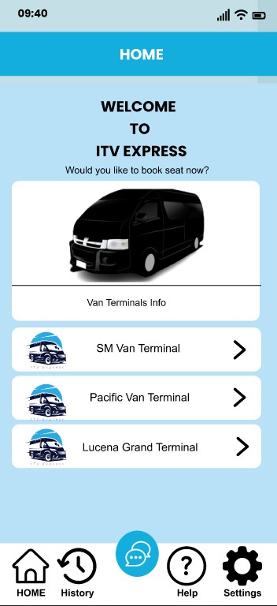
Home — Book a Seat
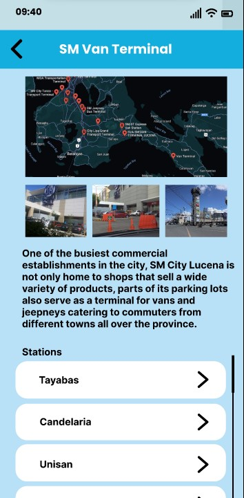
SM Van Terminal — Map & Stations
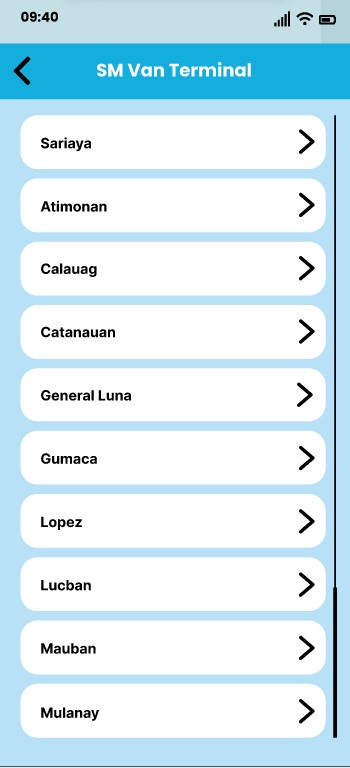
SM Van Terminal — Destinations
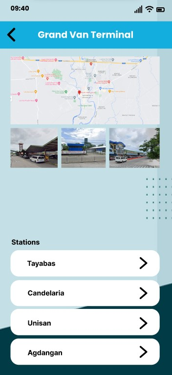
Grand Van Terminal — Map & Stations
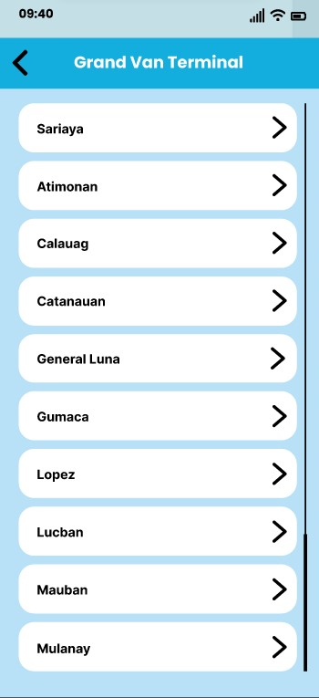
Grand Van Terminal — Destinations
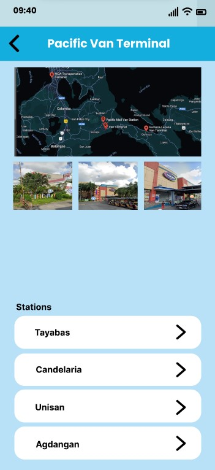
Pacific Van Terminal — Map & Stations
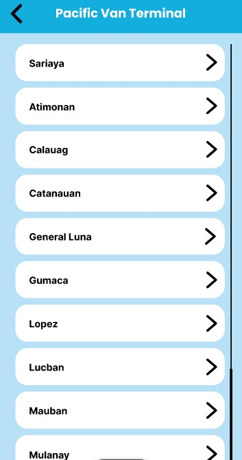
Pacific Van Terminal — Destinations
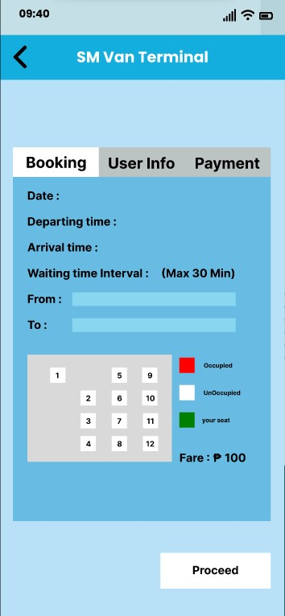
Seat Picker — Van Layout
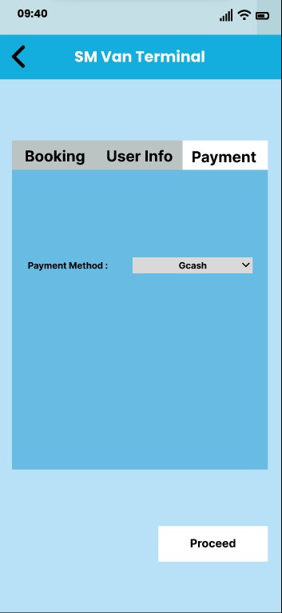
Payment Method — GCash
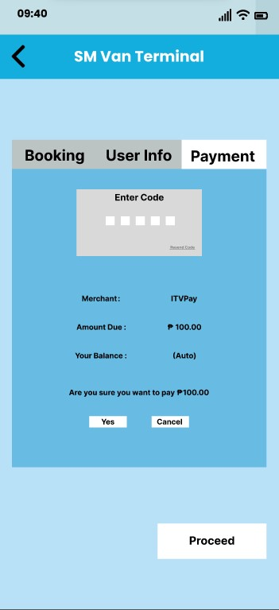
Payment — Confirm & Send
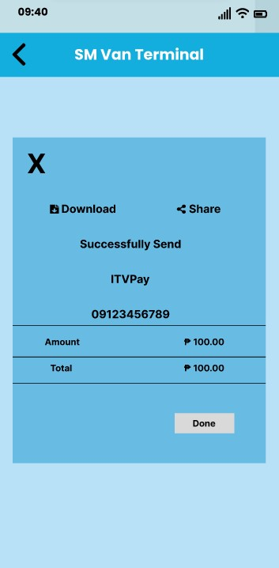
Payment Successful
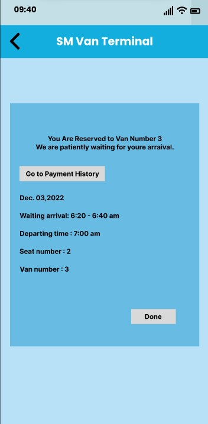
Reservation Confirmed — Trip Details
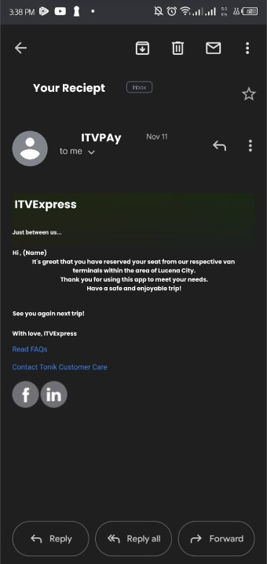
Email Receipt Confirmation
This project taught me that the best design solutions come from real frustration. I didn't have to imagine the user's pain — I lived it. That made every design decision clearer because I always had a real "why" behind it.
If I had more time, I would:
This was my first end-to-end UI/UX project, and it showed me that design isn't just about making things look good — it's about removing friction from people's lives.